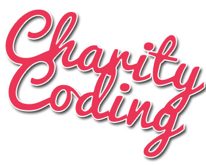

Let's hack on stuff and do some good!
For one day, we donate our time and skills to charities, non-profits and any other project for a better world that is in need of some "javascript love".
Team up with other people, contribute to some awesome projects and learn new stuff – all while leveling up your karma.
Wednesday, September the 10th, 10am to 8pm
at bitcrowd, Sanderstraße 28, 12047 Berlin
Lanyrd Event Page
Projects
- WheelMap is an award-winning online map to search, find and mark wheelchair-accessible places. It is available in 21 languages (including Klingon!) and lists more than half a million places.
- How do you say "beer" in German Sign Language?
SeeMeSpeak is a sign-language dictionary with almost 800 entries and a RailsRumble 2013 winner. - … – more projects to be announced soon – …
- Have an idea to make people's lives easier? Looking for help with coding?
Bring your project to Charity Coding!
How to get there
JSFest Charity Coding takes place at the bitcrowd office in Sanderstraße 28, Berlin. The easiest way to get there is to take the U8 to Schönleinstraße.
The offices are in the back house. Enter through the big gate, then take the stairs across the yard with the sign "Aufgang III".
Contact the Organizers
If you have a project that you'd like to bring to Charity Coding or if you want to participate in the organisation, drop us a line!
Bodo – bodo@bitcrowd.net
Rin – rin@bitcrowd.net